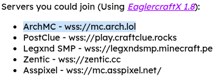
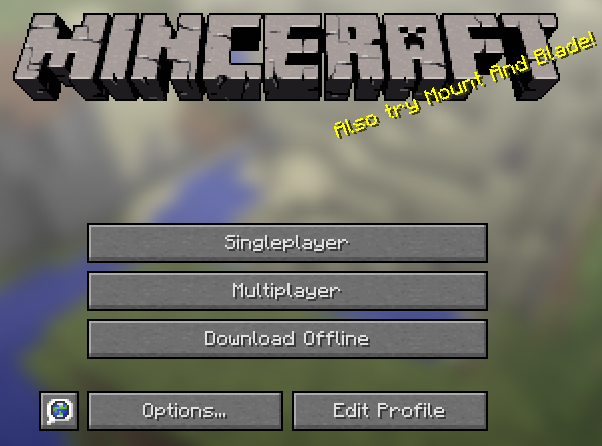
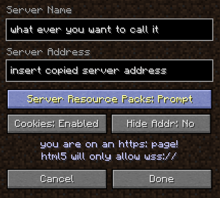
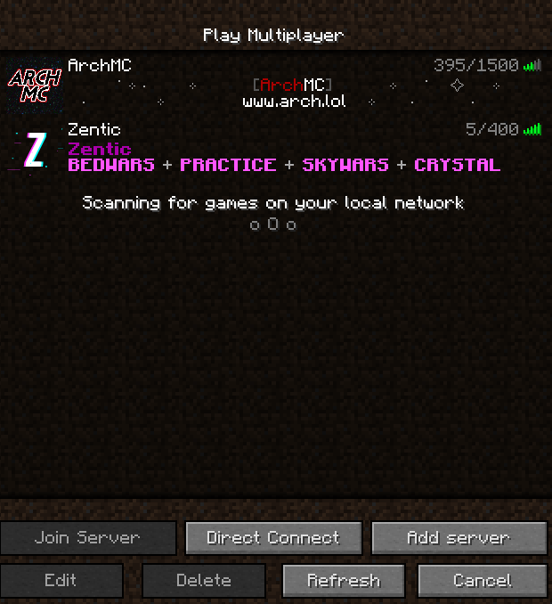

Servers you could join (Using
EaglercraftX 1.8):
- ArchMC - wss://mc.arch.lol
- PostClue - wss://play.craftclue.rocks
- Legxnd SMP - wss://legxndsmp.minecraft.pe
- Zentic - wss://zentic.cc
- Asspixel - wss://mc.asspixel.net/
These are the first five servers taken from this Youtube Video.
If you're unsure how to join these servers, follow these instructions:
-
Copy specifically the address of the server

-
Open preferably EaglercraftX 1.8

-
Press the "Multiplayer" button and navigate to "Add Server" and insert your server address in the second input

-
After clicking done, your server should appear and you're good to go!
